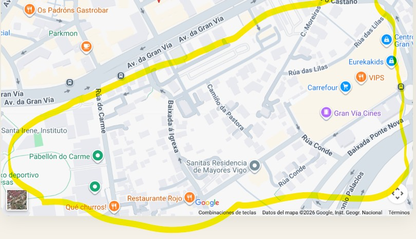

⌂
URBAN STAY · ZAMORA 89
ES
EN
FR
PT
DE
IT
NL
Volver a la guía
SMART PARKING
Aparcamiento
Opciones verificadas por el anfitrión a menos de cinco minutos andando.
✓
Zona verificada por el anfitrión

Zona gratuita recomendada
ORA / XER
Parking cubierto
🚶 3–5 min
Zona verificada por el anfitrión
·
El área marcada ha sido confirmada por el anfitrión.